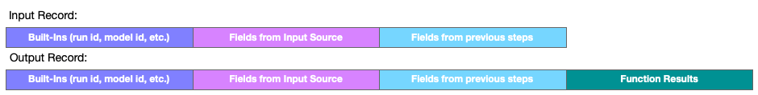

Execute Function Step
This step uses one or more data fields as input to a Numbrz Function, executes the function, then collects the function's output. All output fields are appended to the current record and the combined record is passed to the next step. This step produces a single output record for each input record.
Configuration
To configure a Function step, select a Numbrz Function to execute and then map fields from the records passing through the step to the function's inputs.
See also: About Stage Steps, About Functions